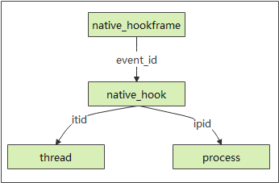
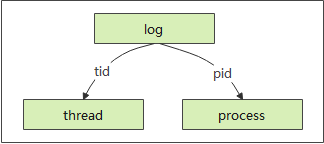

概述TraceStreamer生成的数据库
TraceStreamer虽然对外提供了各种各样的使用方式，但核心的业务仍是将trace数据源转化为易于理解和使用的数据库。用户可以通过SmartPerf界面直观的研究系统跟踪数据，也可在理解TraceStreamer生成的数据库的基础上，在TraceStreamer的交互模式或者Smartperf的数据库查询模式下，使用SQL查询语句自由组装查看用户关心的数据。 下文将对TraceStreamer生成的数据库进行详细描述，给用户使用SQL查询系统跟踪数据提供帮助。
TraceStreamer输出数据库包含以下表格
- trace_range ： 记录ftrace数据与其他类型数据的时间交集，供前端展示数据时使用。
- process : 记录进程信息。
- thread ： 记录线程信息。
- thread_state ： 记录线程状态信息。
- instant : 记录Sched_waking, sched_wakeup事件， 用作ThreadState表的上下文使用。
- raw ： 此数据结构主要作为ThreadState的上下文使用，这张表是sched_waking,sched_wakup, cpu_idle事件的原始记录。
- callstack ： 记录调用堆栈和异步调用，其中depth,stack_id和parent_stack_id仅在非异步调用中有效。当cookid不为空时，为异步调用，此时callid为进程唯一号，否则为线程唯一号。
- irq ： 记录中断相关事件。
- measure ： 记录所有的计量值。
- log ： 记录hilog打印日志数据。
- heap ： 记录堆内存申请与释放相关的数据。
- heap_frame ： 记录堆内存申请与释放相关的调用栈。
- hidump ： 记录FPS（Frame Per Second）数据。
- symbols ： 记录系统调用名称和其函数指针的对应关系，trace中用addr来映射function_name来节省存储空间
- syscall ： 记录用户空间函数与内核空间函数相互调用记录
- args ： 记录方法参数集合
- sys_event_filter ： 记录所有的filter
- clk_event_filter ： 记录时钟事件
- cpu_measure_filter ： cpu事件过滤器表。
- measure_filter ： 记录一个递增的filterid队列，所有其他的filter类型在获取过程中，均从此数据列表中获取下一个可用的filter_id并做记录。
- process_measure_filter ： 将进程ID作为key1，进程的内存，界面刷新，屏幕亮度等信息作为key2，唯一确定一个filter_id
- data_type ： 记录数据类型和typeId的关联关系。
- data_dict ： 记录常用的字符串，将字符串和索引关联，降低程序运行的内存占用，用作辅助数据。
- meta ： 记录执行解析操作相关的基本信息。
表格关系图
进程表与线程表关系图：
描述：
当一个进程或者线程结束后，系统可能再次将该进程号或者线程号分配给其他进程或者线程，造成一个进程号或线程号代表多个进程或线程的情况。
Process和Thread表中的id字段可以唯一标识进程和线程。process表中的id在其他表中用作ipid字段。thread表中的id在其他表中用作itid字段。
thread表通过ipid字段关联process表的id字段，可以查询线程归属进程。
举例：
已知pid = 123,查看当前进程下的所有线程信息,可以使用如下SQL语句：
select thread.* from thread, process where process.pid = 123 and thread.ipid = process.id
线程表与线程运行状态表关系图

描述：
thread_state表记录所有线程的运行状态信息，包含ts(状态起始时间)，dur(状态持续时间)，cpu, itid, state（线程状态）。 thread表的id字段与thread_state表的itid字段相关联。
举例：
已知tid = 123, 查看当前线程的所有运行状态信息，可以使用如下SQL语句：
select thread_state.* from thread, thread_state where thread.tid = 123 and thread.id = thread_state.itid
堆内存数据变化表关系图

描述：
heap表记录堆内存申请(AllocEvent)和释放(FreeEvent)数据。heap表通过ipid和itid字段分别与process和thread表的id字段关联，通过eventId与heap_frame表的eventId字段相关联。
heap表字段解释如下：
eventId: 唯一标识一次堆内存申请或释放， 通过与heap_frame表关联可以拿到当前申请或释放的函数调用堆栈。
addr： 堆内存申请/释放的地址
heap_size: 堆内存申请/释放的大小
heap_frame表记录内存申请/释放的调用堆栈。通过eventId区分一组调用堆栈，depth为堆栈深度，depth为0时，表示当前行为栈顶数据。
举例：
已知tid = 123, 查看当前线程的所有堆内存变化信息，可以使用如下SQL语句：
select heap.* from thread, heap where thread.tid = 123 and thread.id = heap.itid
已知eventid = 0, 查看当前内存变化调用堆栈
select * from heap_frame where eventId = 0
日志表与进程线程表关系图

描述：
log表记录日志信息。可以根据seq字段的连续性，来判断是否存在日志丢失的情况。
举例：
已知tid = 123, 查看当前线程的所有error级别的日志，可以使用如下SQL语句：
select * from log where tid = 123 and level = "error"
TraceStreamer输出数据库表格详细介绍
trace_range表
表结构：
| Columns Name | SQL TYPE |
|---|---|
| start_ts | NUM |
| end_ts | INT |
关键字段描述：
start_ts: trace的开始时间，纳秒为单位
end_ts: trace的结束时间，纳秒为单位
process表
表结构：
| Columns Name | SQL TYPE |
|---|---|
| id | NUM |
| type | INT |
| pid | NUM |
| name | INT |
| start_ts | NUM |
关键字段描述：
id: 进程在数据库重新重新定义的id，从0开始序列增长
pid: 进程的真实id
name: 进程名字
thread表
表结构：
| Columns Name | SQL TYPE |
|---|---|
| id | INT |
| type | NUM |
| tid | INT |
| name | NUM |
| start_ts | INT |
| end_ts | INT |
| ipid | INT |
| is_main_thread | INT |
字段详细描述：
id: 线程在数据库重新重新定义的id，从0开始序列增长
ipid: 线程所属的进程id, 关联进程表中的ID
name: 线程名字
is_main_thread: 是否主线程，主线程即该线程实际就是进程本身
thread_state表
表结构：
| Columns Name | SQL TYPE |
|---|---|
| id | INT |
| type | NUM |
| ts | INT |
| dur | INT |
| cpu | INT |
| itid | INT |
| state | NUM |
字段详细描述：
id: 线程状态在数据库中的id，从0开始序列增长
ts: 该线程状态的起始时间
dur: 该线程状态的持续时间
cpu: 该线程在哪个cpu上执行（针对running状态的线程）
itid: 该状态所属的线程所属的进程id, 关联进程表中的ID
state: 线程实际的的状态值
'R', Runnable状态
'S', interruptible sleep
'D', uninterruptible sleep
'T', Stoped
't', Traced
'X', ExitedDead
'Z', ExitZombie
'x', TaskDead
'I', TaskDead
'K', WakeKill
'P', Parked
'N', NoLoad
instant表
表结构：
| Columns Name | SQL TYPE |
|---|---|
| ts | INT |
| name | NUM |
| ref | INT |
| ref_type | NUM |
表描述：
记录了系统中的waking和wakeup事件。
raw表
表结构：
| Columns Name | SQL TYPE |
|---|---|
| id | INT |
| type | NUM |
| ts | INT |
| name | NUM |
| cpu | INT |
| itid | INT |
表描述：
记录了系统中的waking、wakup、cpu_idel、cpu_frequency数据。
callstack表
表结构：
| Columns Name | SQL TYPE |
|---|---|
| id | INT |
| ts | INT |
| dur | INT |
| callid | INT |
| cat | NUM |
| name | NUM |
| depth | INT |
| cookie | INT |
| parent_id | INT |
| argsetid | INT |
| chainId | NUM |
| spanId | NUM |
| parentSpanId | NUM |
| flag | NUM |
| args | NUM |
字段详细描述：
dur: 调用时长
callid: 调用者的ID，比如针对线程表里面的id
name: 调用名称
depth: 调用深度
parent_id: 父调用的id
measure表
表结构：
| Columns Name | SQL TYPE |
|---|---|
| type | NUM |
| ts | INT |
| value | INT |
| filter_id | INT |
字段详细描述：
heap表
表结构：
| Columns Name | SQL TYPE |
|---|---|
| eventId | INT |
| ipid | INT |
| itid | INT |
| event_type | NUM |
| start_ts | INT |
| end_ts | INT |
| dur | INT |
| addr | INT |
| heap_size | INT |
| all_heap_size | INT |
字段详细描述：
heap_frame表
表结构：
| Columns Name | SQL TYPE |
|---|---|
| eventId | INT |
| depth | INT |
| ip | INT |
| sp | INT |
| symbol_name | NUM |
| file_path | NUM |
| offset | INT |
| symbol_offset | INT |
表描述：
记录了内存的申请和释放的堆栈。
hidump表
表结构：
| Columns Name | SQL TYPE |
|---|---|
| ts | INT |
| fps | INT |
表描述：
此表记录了设备的帧率信息，fps。
symbols表
表结构：
| Columns Name | SQL TYPE |
|---|---|
| id | INT |
| funcname | NUM |
| addr | INT |
表描述：
此表记录了数值和函数调用名称的映射关系。
measure_filter表
记录一个递增的filterid队列，所有其他的filter类型在获取过程中，均从此数据列表中获取下一个可用的filter_id并做记录。
表结构：
| Columns Name | SQL TYPE |
|---|---|
| id | NUM |
| type | NUM |
| name | INT |
| source_arg_set_id | INT |
字段详细描述：
过滤分类（type），过滤名称（key2），数据ID(key1)。
数据ID在process_measure_filter, sys_event_filter中作为id。
process_measure_filter表
将进程ID作为key1，进程的内存，界面刷新，屏幕亮度等信息作为key2，唯一确定一个filter_id, filter_id同时被记录在measure_filter表中。
表结构：
| Columns Name | SQL TYPE |
|---|---|
| id | INT |
| type | NUM |
| name | NUM |
| ipid | INT |
字段详细描述：
filterid: 来自measure_filter表
name: cpu状态名
ipid: 进程内部编号
data_type表
表结构：
| Columns Name | SQL TYPE |
|---|---|
| id | INT |
| typeId | INT |
| desc | NUM |
表描述：
此表记录了一个数据类型ID和数据描述的映射。
data_dict表
表结构：
| Columns Name | SQL TYPE |
|---|---|
| id | INT |
| data | NUM |
表描述：
此表记录了一个数据类型ID和字符串的映射。
meta表
表结构：
| Columns Name | SQL TYPE |
|---|---|
| name | NUM |
| value | NUM |
表描述：
此表记录了数据解析或导出时的一些现场数据，比如使用的trace_streamer版本， 工具的发布时间，数据解析的时间，数据的持续时长，以及原始数据的格式。